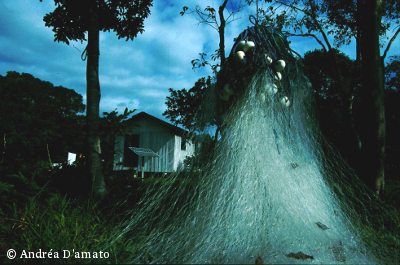
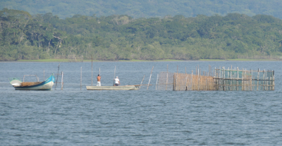
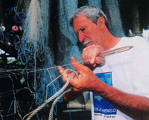
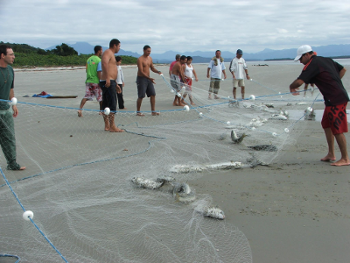
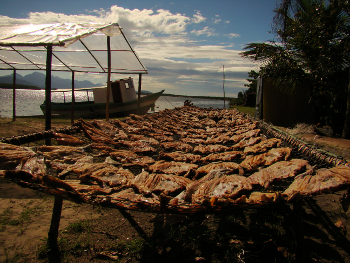
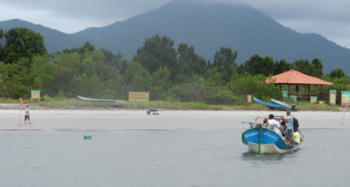
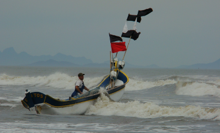
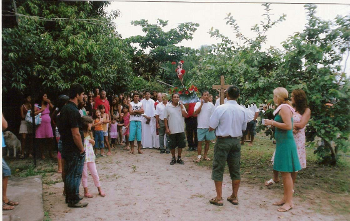
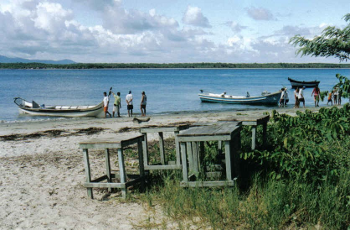
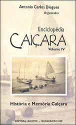

Os primeiros brasileiros surgiram da miscigenação genética e cultural do colonizador português com o indígena do litoral, ocorrida nas quatro primeiras décadas, que formou uma população de mamelucos que rapidamente se multiplicou. Esta protocélula da nação brasileira foi moldada,
pelo patrimônio milenar de adaptação à floresta tropical dos tupi-guarani. A incorporação da cultura negra à ordem social e econômica acabou gerando, posteriormente, um contigente mestiço de índios, brancos e negros, que viria constituir o povo brasileiro (ADAMS, 2000). Esta população mestiça foi aos poucos se espalhando pelo território, estabelecendo variantes culturais
(RIBEIRO, 1987) De acordo com o tipo de exploração econômica e as peculiaridades ecológico-regionais, conformando, no Brasil rural, um conjunto de subculturas a que se costuma denominar de cultura rústica brasileira (RIBEIRO, 1974 apud ADAMS, 2000). Neste contexto, a cultura caipira formou-se pelo cruzamento do português com o indígena, e produziu o mameluco paulista, na qual o caiçara está inserido (ADAMS, 2000).

Todos esses fatos históricos foram importantes para o surgimento do grupo cultural “caiçara”. O termo caiçara tem origem no vocábulo Tupi-Guarani caá-içara (SAMPAIO, 1987), que era utilizado para denominar as estacas colocadas em torno das tabas ou aldeias, e o curral feito de galhos de árvores fincados na água para cercar o peixe (ADAMS, 2000). Alguns dicionários da Língua Portuguesa trazem em suas versões eletrônicas (AULETE, 2013, PRIBERAM, 2013; MICHAELIS, 2013) as seguintes definições para o termo: natural ou habitante de localidade litorânea; praiano; pescador que vive na praia; caipira do litoral; habitante do litoral, que vive de modo rústico, especialmente da pesca ou de atividade próxima; relativo a Cananéia ou o que é seu natural ou habitante. Contudo, também trazem definições pejorativas e, de certa forma, preconceituosas da palavra caiçara: caipira asselvajado; caboclo sem préstimo; homem ordinário; malandro, vagabundo; pessoa estúpida ou inútil; caipira, matuto, especialmente o considerado muito bronco ou asselvajado.

Monteiro (2002) faz uma interessante ponderação relativa ao uso do termo caiçara: “Se até poucos anos atrás não se auto-denominavam dessa forma, a adoção repentina desse nome passou a exigir um certo zelo, cuidado e preocupação em relação ao uso e aos usos e significados a ele atribuídos. Entretanto, se o termo é impregnado de conotações pejorativas, por quê sua adoção? A pergunta não é gratuita. Sua resposta exige o entendimento do contexto social e político mais amplo em que se situa a própria essência do movimento desses moradores: a adoção desse termo está diretamente vinculada ao debate que se trava da relação entre populações tradicionais e preservação ambiental, principalmente no âmbito do Vale do Ribeira. Significa dizer que esse grupo de moradores se afirma como caiçara, na medida em que, nesse debate, são vistos e considerados como tal”.

Entende-se por caiçaras aquelas comunidades formadas pela mescla étnico-cultural de indígenas, de colonizadores portugueses e em menor grau dos escravos africanos. Alguns autores (MOURÃO, 1971; DIEGUES, 1983) afirmam que as comunidades caiçaras se formaram nos interstícios dos grandes ciclos econômicos do período colonial, fortalecendo-se quando essas atividades voltadas para a exportação entraram em declínio. Sua decadência, em particular no setor agrícola, incentivou as atividades de pesca e coleta em ambientes aquáticos, sobretudo os de água salobra, como estuários e lagunas. Sinteticamente, pode-se dizer que, em passado recente, o “caiçara” tinha relação apenas secundária com o mar. Este não se constituía num referencial cultural central de seu modo de vida. O mar ocupava posição secundária na configuração de sua visão de mundo. Ele não era um “pescador exclusivo”, como atualmente, mas um pescador eventual que explorava mar de dentro e os estuários esporadicamente e sua canoa rústica; nos meses de inverno dirigia-se à linha da praia em grupos numerosos para fazer o lanço da tainha e, assim, pescava para complementar suas necessidades alimentares e ganhar algum dinheiro num mercado incipiente (SILVA, 2004).

Caracterizam-se por sua relativa independência econômica e cultural, mesclando técnicas e conhecimentos europeus e indígenas e, dessa forma, otimizando o aproveitamento dos recursos naturais da Mata Atlântica de seus ecossistemas associados, como restingas, manguezais e corpos
d ́água. Essa cultura se desenvolveu principalmente nas áreas costeiras dos atuais Estados do Rio de Janeiro, São Paulo, Paraná e norte de Santa Catarina (MINISTÉRIO DO MEIO AMBIENTE, 2001). Economicamente, desenvolvem um complexo sistema de atividades complementares, destacando-se a agricultura de coivara, o extrativismo vegetal, a caça, a coleta de moluscos e crustáceos e a pesca, seja em rios, lagunas ou mar aberto (MOREIRA; SALES, 1999). Segundo Adams (2000), a economia caiçara era caracterizada por uma oposição tanto à economia indígena primitiva quanto à economia industrial, ou seja, se por um lado ela precisava
responder ao consumo da unidade familiar, por outro devia dar uma contribuição à economia global, assim raramente a exploração era totalmente auto-suficiente.
Habitantes autênticos das florestas tropicais brasileiras, os caiçaras possuem um importante conhecimento sobre os ecossistemas que habitam. Dependentes de recursos aquáticos nas suas atividades de pesca e extrativismo, apresentam um detalhado conhecimento sobre a dinâmica do ecossistema estuarino-lagunar. Possuem ainda, um profundo conhecimento etnobiológico e etnoecológico, relacionado com as suas atividades de subsistência que incluem tanto recursos terrestres como recursos aquáticos (HANAZAKI, 2001). Eles exploram ambientes marinhos, estuarinos e de água doce e reconhecem uma alta diversidade de espécies de peixes e, muitas vezes, minimizam a incerteza da atividade pesqueira através do seu conhecimento sobre as espécies e o ambiente (PÁLSSON, 1991 apud HANAZAKI, 2001). Vivendo no interstício da Mata Atlântica e do mar, estuários, mangues, restingas e lagunas, usando seus recursos naturais para a reprodução de seu modo de vida, construíram um território rico em diversidade biológica e cultural. Os saberes tradicionais sobre os seres do mar e da mata desempenham papel fundamental na construção de sistemas de manejo da natureza, muitos deles marcados por grande engenhosidade (MUSSOLINI, 1946; DIEGUES, 1983, 1996).

O grupo doméstico era a unidade básica e vital da existência do caiçara: grupo de reprodução, de trabalho, de produção e de consumo ao mesmo tempo. O isolamento que muitas vezes caracterizou as comunidades caiçaras acabou por torná-la quase uma autarquia, auto-suficiente e independente (MARCÍLIO apud ADAMS, 2000). A conformação do povoado caiçara era de um grupamento desordenado de casas isoladas umas das outras, escondidas entre as folhagens e protegidas do vento pela vegetação da orla da praia, local esse, que era o centro da vida caiçara e ponto de articulação com o mundo exterior. O sertão era o espaço do trabalho, onde se encontravam as roças, os bananais e a floresta de onde se retirava lenha, ervas medicinais e onde se caçava (ADAMS, 2000).
O caiçara se distinguia pela praia a cujo grupo pertencia e a solidariedade entre seus membros era importante fator de equilíbrio, mesmo não sendo regulada por nenhuma organização ou instituição. Apesar da atividade agrícola ser essencialmente individual e familiar, as trocas e empréstimos de produtos, a prestação de serviços e a ajuda nos trabalhos sob a forma de mutirão levavam a uma distribuição mais ou menos eqüitativa dos produtos obtidos nas culturas. A pesca, sendo uma atividade coletiva, envolvia desde a ajuda espontânea até a distribuição de seus resultados. Todos os membros dos povoados participavam das festas, casamentos, batizados e enterros. Mas a maior expressão desta solidariedade manifestava-se em casos de doença grave e envolvia o transporte do doente até a vila, ou procurar na mata plantas medicinais recomendadas pelos conhecedores locais e cuidar da casa e dos filhos do doente (FRANÇA, 1954 apud ADAMS, 2000). As formas de lazer e distração não eram muito variadas e limitavam-se às festas, procissões, danças e poucos jogos. Os momentos de trabalho coletivo eram também importantes fatores de integração social da comunidade (ADAMS, 2000).

No interior do espaço caiçara surgiram cidades como Parati, Santos, São Vicente, Iguape, Ubatuba, Ilha Bela, São Sebastião, Antonina e Paranaguá, as quais em vários momentos da história colonial funcionaram como importantes centros exportadores. As comunidades caiçaras sempre mantiveram com essas cidades, em maior ou menor intensidade, contatos e intercâmbios econômicos e sociais, delas dependendo também para o aprovisionamento de bens não produzidos nos sítios e nas praias. Esses contatos se conservaram por via terrestre (caminhos), fluvial e marítima, sobressaindo, do século passado até as primeiras décadas do século XX, as
chamadas “canoas de voga”, onde eram transportados produtos agrícolas, peixe seco, aguardente entre outros. A maioria desses centros e áreas rurais litorâneas entrou em decadência no final do séc. XIX, principalmente com a abolição da escravatura, o que causou declínio de determinadas atividades agrícolas de exportação, como o arroz (MINISTÉRIO DO MEIO AMBIENTE, 2001).
As transformações e as mudanças sócio-culturais têm sido uma constante nas comunidades caiçaras. Marcada pela pequena produção de mercadorias, a economia caiçara organizou-se na periferia dos ciclos de monocultura do litoral do sudeste, fornecendo-lhes gêneros alimentícios e mão-de-obra. Quando esses diversos ciclos chegaram ao fim, como o da cana-de-açucar e o da rizicultura, as comunidades caiçaras, em geral, voltaram-se a uma
produção de subsistência, com a geração de pequenos excedentes vendidos às cidades litorâneas com as quais mantiveram relações comerciais mais ou menos intensas. Essas cidades sempre atraíram parte da população caiçara que, em várias delas, estabeleceram bairros urbanos e periurbanos, onde passaram a viver exclusivamente da pesca artesanal mantendo, ao mesmo
tempo, relações sociais com os parentes que continuavam a viver nas praias e sítios (DIEGUES, 2004). Cada vez mais empurrado da terra para o mar, o caiçara do litoral paulista rearticulou seu modo de vida em função da pesca e da especialização em algumas tarefas antes desenvolvidas de modo interdependente – como a coleta de palmito e caixeta, por exemplo. Como pescador exclusivo, tornou-se escravo do mercado, da pesca predatória, da necessidade de motorização e de insumos industriais; como especialista em recursos extrativistas, sentiu-se constantemente ameaçado, perseguido por policiais florestais, em virtude do cercamento de suas antigas áreas de
caça e coleta e sua subseqüente transformação em unidades de preservação ambiental. Desse modo, o “caiçara” viu-se, no presente, caminhando pela tênue fronteira que separa o marginal social do sujeito portador de uma cultura e de uma identidade mais ou menos definidas, tal como estas haviam sido formatadas no passado (SILVA, 2004).

As comunidades caiçaras mantiveram sua forma tradicional de vida até a década de 1950, quando as primeiras estradas de rodagem interligaram as áreas litorâneas com o planalto, ocasionando o início do fluxo migratório. Uma das ameaças a essas comunidades e ao exercício de suas atividades tradicionais provém do avanço da especulação imobiliária, iniciada nas
décadas de 1950 e 1960, sobretudo com a construção de residências secundárias ao longo do litoral. A especulação imobiliária privou grande parte dos caiçaras de suas posses nas praias, obrigando-os tanto a trabalhar como caseiros e pedreiros, quanto a se mudar para longe do local de trabalho, dificultando as atividades pesqueiras (MINISTÉRIO DO MEIO AMBIENTE, 2001).
O turismo de massa, sobretudo no litoral norte do Estado de São Paulo, também contribuiu para a desorganização das atividades tradicionais, criando uma nova estação ou safra nos meses do verão, quando muitos caiçaras se transformam em prestadores de serviços. Outro processo responsável pela desorganização da cultura caiçara é o fato de grande parte de seu território ter-se transformado em áreas naturais protegidas. A modificação do espaço de reprodução material e social para parques e reservas naturais resultou em graves limitações às atividades tradicionais de agricultura itinerante, caça, pesca e extrativismo. Emergiram assim, conflitos com os administradores das unidades de conservação além de uma migração ainda maior para as áreas urbanas, onde os caiçaras, expulsos de seus territórios, passaram a viver em verdadeiras favelas, fadados ao desemprego e ao subemprego (MINISTÉRIO DO MEIO AMBIENTE, 2001).

Essas contínuas agressões à cultura e ao modo de viver caiçara não
aconteceram sem alguma reação dessas comunidades. A partir da década de 1980, quando a pressão dos órgãos governamentais ambientalistas sobre as comunidades caiçaras se fez maior, várias organizações não-governamentais e institutos de pesquisa passaram a apoiá-las no esforço para permanecerem em seus territórios. Começaram a surgir, em alguns locais, associações de moradores, as quais se fizeram ouvir em reuniões governamentais e congressos, dando início a um processo de reafirmação da identidade cultural caiçara, abafada por décadas de discriminação por parte das autoridades e das elites urbanas interessadas na expropriação de suas terras (MINISTÉRIO DO MEIO AMBIENTE, 2001).
Apesar de esforços recentes para integrar comunidades locais com as propostas de desenvolvimento e conservação, estas comunidades, incluindo os bairros caiçaras nas áreas costeiras, quase sempre se situam à margem do desenvolvimento econômico. Além disso, a tendência geral de fragmentação da Mata Atlântica pode afetar diretamente o conhecimento
tradicional caiçara, cuja tendência é tornar-se também fragmentado ou ser absorvido pelas culturas urbanas que os circundam. Considerando-se esta situação, as ameaças ao conhecimento local dos caiçaras são apenas conseqüências das ameaças a sua existência (HANAZAKI, 2001).
Embora estejam passando por rápidas mudanças no seu modo de vida e de subsistência, devido a pressões como a degradação de áreas litorâneas e o aumento da urbanização e do turismo desordenado, ainda hoje percebemos a intensa ligação das comunidades caiçaras com as mais variadas atividades de pesca artesanal e a contínua dinâmica de produção e transmissão cultural dessas comunidades (DIEGUES, 1999). Registra-se a ocorrência, em algumas porções da costa sudeste, como a região do Complexo Estuarino-Lagunar de Iguape/Cananéia/Paranaguá, de núcleos caiçaras vivendo em forte isolamento dos centros urbanos, produzindo a grande maioria dos bens necessários para a sua sobrevivência e reprodução sócio-cultural (MOREIRA; SALES, 1999).

Essas comunidades caiçaras passaram a chamar a atenção de pesquisadores em virtude das ameaças, maiores a cada dia, a sua sobrevivência material e cultural, e também por causa da contribuição histórica que têm dado à conservação da biodiversidade, pelo conhecimento que possuem da fauna e da flora e pelos sistemas tradicionais de manejo dos recursos naturais que
dispõem (MINISTÉRIO DO MEIO AMBIENTE, 2001). Assim, podemos destacar os estudos sobre pesca (DIEGUES, 1983; CUNHA, 1987; SILVA, 2000; FERNANDES-PINTO, 2001; BECCATO, 2002; CLAUZET; BARELLA, 2004; DE OLIVEIRA, 2011; AFONSO, 2013), impacto do turismo sobre as comunidades (CALVENTE, 1993; MERLO, 1997; PARADA, 2001), comunidades que vivem em ilhas (BEGOSSI, 1989), ecologia humana e etnoconhecimento (HANAZAKI, 2001; GARROTE, 2004; SOUZA; BARELLA, 2004; SOUZA, 2004; SILVA, 2007) e, finalmente, sobre a relação e/ou conflitos entre populações caiçaras, territórios, áreas naturais protegidas e unidades de conservação (MALDONADO, 1997; DIEGUES; NOGARA, 1999; MENDONÇA, 2000; ADAMS, 2000; NUNES, 2003; MENDONÇA, 2010), entre outros.
Finalmente, vale destacar, a publicação da “Enciclopédia Caiçara”, importante obra publicada pelo Núcleo de Apoio à Pesquisa sobre Populações Humanas e Áreas Úmidas Brasileiras (NUPAUB/USP), que traz em seus cinco volumes boa parte do que se conhece atualmente sobre os conhecimentos e saberes caiçaras, sobre seu modo de vida, incluindo história social, crenças, música e arte.

><> ><> ><>
REFERÊNCIAS BIBLIOGRÁFICAS:
ADAMS, C. Caiçaras na Mata Atlântica: Pesquisa científica versus Planejamento e Gestão Ambiental. São Paulo: Annablume Editora e Comunicação, 2000. 337 p.
AFONSO, M. História de pescador: um século de transformações técnicas e
socioambientais na pesca do caiçara do litoral de São Paulo (1910-2011). Dissertação (mestrado). 261 p. Programa de Pós-Graduação em História Social do Departamento de História da Faculdade de Filosofia, Letras e Ciências
Humanas. Universidade de São Paulo, São Paulo, 2013.
AULETE. Idicionário Aulete: o dicionário da língua portuguesa na internet. Disponível em: www.aulete.uol.com.brwww.aulete.uol.com.br. Acesso em: 27.out.2013.
BECCATO, M.A.B. Técnicas e Estratégias de pesca relacionadas a confecção do cerco-fixo por pescadores artesanais do Parque Estadual da Ilha do Cardoso e seu entorno. 51 p. Monografia (Bacharelado em Ciências Biológicas) – Universidade Federal de São Carlos, São Carlos, 2002.
BEGOSSI, A. Food diversity and choice and tecnology in Brazilian Fishing Community. 1989. 223 p. PhD – University of California. Davis, 1989.
CALVENTE, M. DEL C.H.M. No território do azul marinho: a busca do espaço caiçara. 1993. 148 p. Dissertação (Mestrado em Geografia) – Faculdade de Filosofia, Letras e Ciências Humanas, Universidade de São Paulo, São Paulo, 1993.
CLAUZET, M.; BARELLA, W. A pesca artesanal na praia Grande do Bonete, Ubatuba, litoral norte de São Paulo. In: DIEGUES, A. C. S. (Ed.). Enciclopédia caiçara. O olhar do pesquisador. São Paulo: Hucitec, 2004. p 147-161.
CUNHA, L.H.O. Entre o mar e a terra, tempo e espaço na pesca em Barra da Lagoa. 1987. 244 p. Dissertação (Mestrado em Antropologia) – Faculdade de Ciências Sociais, Pontifícia Universidade Católica de São Paulo, São Paulo, 1987.
DE OLIVEIRA, E. .N. Estudo da pesca artesanal em dois setores do Complexo estuarino-lagunar de Cananéia-Iguape (SP) considerando relações sócio-ambientais. Dissertação (mestrado). Programa de Pós-Graduação em Ciência Ambiental. Universidade de São Paulo, São Paulo, 2011.
DIEGUES, A. C. S. Pescadores, camponeses e trabalhadores do mar. São Paulo: Editora Ática, 1983. 287 p.
DIEGUES, A. C. S. O mito moderno da natureza intocada. São Paulo: Editora Hucitec, 1996. 169 p.
DIEGUES, A. C. S. Human populations and coastal wetlands: conservation and management in Brazil. Ocean and Coastal management, Newark, n. 42, p. 187-210, 1999.
DIEGUES, A. C. S. A mudança como modelo cultural: o caso da cultura caiçara e a urbanização. In: Enciclopédia Caiçara. O olhar do pesquisador. São Paulo: Hucitec, 2004. p. 21-48.
DIEGUES, A. C.; NOGARA. P. J. O nosso lugar virou parque: estudo sócio-ambiental do Saco do Mamanguá, Parati, Rio de Janeiro. 2. ed. São Paulo: NUPAUB/USP, 1999. 187 p.
FERNANDES-PINTO, E. Etnoictiologia dos pescadores da Barra do Superagui,
Guaraqueçaba, PR: Aspectos Etnotaxonômicos, etnoecológicos e utilitários. 2001. 157 p. Dissertação (Mestrado em Ecologia e Recursos Naturais) – Universidade Federal de São Carlos, São Carlos, 2001.
GARROTE, V. Os quintais caiçaras, suas características sócio-ambientais e perspectivas para a comunidade do Saco do Mamanguá, Paraty-RJ. Dissertação (mestrado). Universidade de São Paulo. Escola Superior de Agricultura Luiz de Queiroz, Piracicaba, 2004.
HANAZAKI, N. Ecologia de caiçaras: uso de recursos e dieta. 2001. 193 p. Dissertação (Mestrado em Ecologia) – Instituto de Biologia, Universidade Estadual de Campinas, Campinas, 2001.
MALDONADO, W. Comunidades caiçaras e o Parque Estadual de Ilha Bela. In: DIEGUES, A. C. S. (Ed.). Ilhas e sociedades insulares. São Paulo: NUPAUB-USP, 1997. p 123-136.
MENDONÇA, A. L. F. A Ilha do Cardoso – O Parque Estadual e os moradores. 2000. 163 p. Dissertação (Mestrado em Ciências Florestais) – Escola Superior de Agricultura “Luiz de Queiroz”, Universidade de São Paulo, Piracicaba, 2000.
MENDONÇA, M. O. Territórios, deslocamentos, permanências e transformações: o caso dos caiçaras da Praia Grande da Cajaíba/Paraty, RJ. Dissertação (Mestrado). Programa de Pós-graduação em Ciência Ambiental. Universidade de São Paulo, São Paulo, 2010.
MERLO, M. As vozes do Bonete, uma face de Ilhabela. In: DIEGUES, A.C.S. (Ed.). Ilhas e sociedades insulares. São Paulo: NUPAUB-USP, 1997. p. 111-136.
MICHAELIS. Moderno dicionário da língua portuguesa. Disponível em: <
www.michaelis.uol.com.brhttp://michaelis.uol.com.br/>. Acesso em: 27.out.013.
MINISTÉRIO DO MEIO AMBIENTE, 2001. Saberes Tradicionais e Biodiversidade no Brasil. Brasília: Ministério do Meio Ambiente; São Paulo: USP, 2001. 176 p.
MONTEIRO, A. R. A. Depois do meio ambiente: mudança social em uma unidade de conservação ambiental. 2002. 250 p. Dissertação (Mestrado em Antropologia) – Universidade Estadual de Campinas, Campinas, 2002.
MOREIRA, A. C. C.; SALES, R. J. R. A cultura caiçara no Brasil. Debates sócio ambientais, 12, 1999.
MOURÃO, F.A.F. Os pescadores do litoral sul de São Paulo. Um estudo de sociologia diferencial. Tese (Doutorado em Sociologia) – Faculdade de Filosofia, Letras e Ciências Humanas, Universidade de São Paulo, São Paulo, 1971. 264 p.
MUSSOLINI, G. O cerco da tainha em São Sebastião. Revista de Sociologia, São Paulo, v. 8, n. 3, p. 135-147, 1946
NUNES, M. Do passado ao futuro dos moradores tradicionais da Estação Ecológica Juréia-Itatins/SP. 2003. 168 p. Dissertação (Mestrado em Geografia Física) – Faculdade de Filosofia, Letras e Ciências Humanas, Universidade de São Paulo, São Paulo, 2003.
PARADA, I.L.S. Mudanças Sócio-Ambientais de duas comunidades caiçaras do Parque Estadual da Ilha do Cardoso – SP. 2001. 82 p. Monografia (Trabalho de Conclusão de Curso de Ecologia) – Universidade Estadual Paulista “Júlio de Mesquita Filho”, Rio Claro, 2001.
PRIBERAM. Dicionário Priberam da Língua Portuguesa (DPLP). Disponível em: www.priberam.pt. Acesso em 27.out.2013.
RIBEIRO, B. G. Prefácio. In: RIBEIRO, B. (Ed.). Suma Etnológica Brasileira. Belém: Ed. Universitária, 1987. 380 p.
SAMPAIO, T. O tupi na geografia nacional. São Paulo: Editora Nacional, 1987. 360 p.
SILVA, V. C. F. Pesca e uso do espaço costeiro na Ilha do Cardoso – Litoral Sul de São Paulo. In: DIEGUES, A. C. S.; VIANA, M. V. (Ed.). Comunidades tradicionais e manejo dos recursos da mata Atlântica. São Paulo: nUPAUB-USP, 2000. p. 123-129.
SILVA, L. G. Da terra ao mar: por uma etnografia histórica do mundo caiçara. In: DIEGUES, A. C. S. (Ed.). Enciclopédia caiçara. O olhar do pesquisador. São Paulo: Hucitec, 2004. p. 49-70.
SILVA, F. O. Conhecimento tradicional e etnoconservação de cetáceos em comunidades caiçaras do município de Cananéia, litoral sul de São Paulo. Dissertação (mestrado). Universidade de São Paulo. Escola Superior de Agricultura Luiz de Queiroz, Piracicaba, 2007.
SOUZA, M. R.; BARELLA, W. Etnoictiologia dos pescadores artesanais da Estação Ecológica Juréia-Itatins (São Paulo, Brasil). In: DIEGUES, A. C. S. (Ed.). Enciclopédia Caiçara. O olhar do pesquisador. São Paulo: Hucitec, 2004. 117-131.
SOUZA, M. R. Etnoconhecimento caiçara e uso de recursos pesqueiros por pescadores artesanais e esportivos no Vale do Ribeira. Dissertação (mestrado). Universidade de São Paulo. Escola Superior de Agricultura Luiz de Queiroz, Piracicaba, 2004.


{kind=link}
{kind=link}
{kind=link}
{kind=link}
{kind=link}
{kind=link}
{kind=link}
{kind=link}
{kind=link}
{kind=link}
{kind=link}